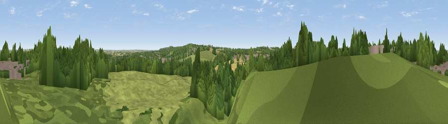

Viewpoint near Dordon
#30498 in England · top 60% of its area beats it · near DordonWhere it is
The exact computed spot (SK 26475 00325). Click the marker for map links.
The view, rendered

A 360° render of this exact spot computed from the terrain model, tree cover and land cover — summer colours, afternoon light, calibrated against photographs of famous viewpoints. Real trees, hedges and buildings will differ in detail.
The panorama
Grey silhouette: terrain skyline in each direction (720 bearings, Earth curvature and refraction included). Dashed green: skyline with trees (+15 m) and buildings (+8 m) as obstacles. Blue strip: how far the ground is visible on each bearing.
Where the view opens
Wedge length = distance to the farthest visible ground on that bearing (vegetation-aware). Rings at 10, 25 and 50 km.
What fills the view
39% woodland · 37% grassland · 14% built-up · 10% cropland
Angular shares of the visible panorama (visual magnitude), not map area. Landscape diversity 0.54 (0–1 Shannon).
Key numbers
More beautiful places nearby
The staircase of upgrades: each row has a higher view potential than everything closer. Driving times are estimates from straight-line distance, calibrated against real road routing — check an actual route before setting out.
| Place | Direction | Drive | Score |
|---|---|---|---|
| Viewpoint near Baddesley Ensor | S · 2 km | ~4 min | 43.1 |
| Viewpoint near Dordon | WSW · 2 km | ~5 min | 57.0 |
| Viewpoint near Ansley Common | SE · 7 km | ~14 min | 69.0 |
| Viewpoint near Streetly | W · 20 km | ~35 min | 69.5 |
| Viewpoint near Stanton under Bardon | ENE · 23 km | ~38 min | 76.0 |
| Viewpoint near Woodhouse Eaves | ENE · 28 km | ~45 min | 77.7 |
| Viewpoint near Abberley | WSW · 61 km | ~83 min | 78.1 |
| Abberley Hill | WSW · 61 km | ~83 min | 80.4 |
52.60007, -1.61055 · source: screening · position refined by local search. Computed location — check access rights before visiting.